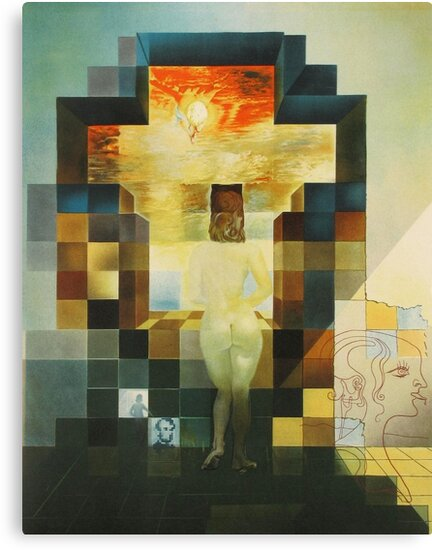
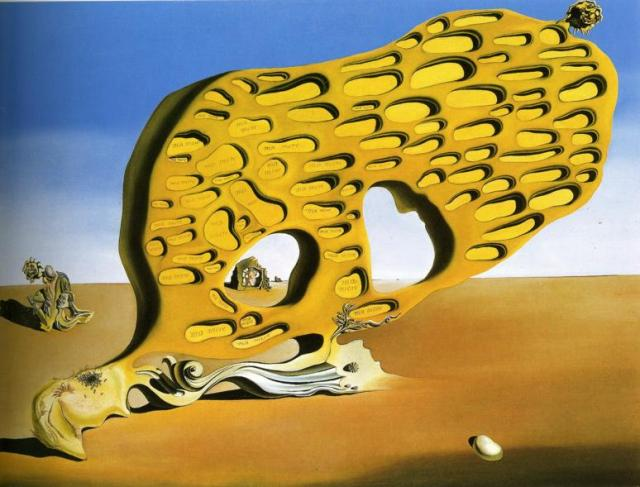

SALVADOR DALI
BIOGRAFIA
Salvador Dalí nació a las 8:45 horas del 11 de mayo de 1904,7 en el número 20 de la calle Monturiol, en Figueras, provincia de Gerona,8 en la comarca catalana del Ampurdán, cerca de la frontera con Francia.8 El hermano mayor de Dalí, también llamado Salvador (nacido el 12 de octubre de 1901 y bautizado como Salvador Galo Anselmo),1 había muerto de un «catarro gastroenterítico infeccioso» unos nueve meses antes (el 1 de agosto de 1903). Esto marcó mucho al artista posteriormente, quien llegó a tener una crisis de personalidad, al creer que él era la copia de su hermano muerto.9 Su padre, Salvador Dalí i Cusí, era abogado de clase media y notario, de carácter estricto suavizado por su mujer Felipa Domènech i Ferrés, quien alentaba los intereses artísticos del joven Salvador.1011 Con cinco años, sus padres lo llevaron a la tumba de su hermano y le dijeron que él era su reencarnación, una idea que él llegó a creer
5 PINTURAS FAVORITAS
LA PERSISTENCIA DE LA MEMORIA
RESEÑA
La persistencia de la memoria, conocido también como Los relojes blandos o Los relojes derretidos es un cuadro del pintor español Salvador Dalí pintado en 1931. Realizado mediante la técnica del óleo sobre lienzo, es de estilo surrealista y sus medidas son 24 x 33 cm.

LINCOLN EN DALIVISION
RESEÑA
Lincoln en Dalivision es una litografía original de edición limitada creada por Salvador Dalí. A menudo se considera una de las litografías Dalí más falsificadas.
EL ENIGMA DEL DESEO
RESEÑA
El enigma del deseo es un famoso cuadro del pintor español Salvador Dalí realizado en 1929. Está hecho mediante la técnica del óleo sobre lienzo, es de estilo surrealista y sus medidas son 110 x 150 cm. Se conserva en Múnich, en la Staatsgalerie Moderner Kunst, la antigua Colección Oskar R. Schlag.
EL SUEÑO
RESEÑA
El sueño. Salvador Dalí. El sueño, óleo pintado por Dalí en 1937, trata de uno de los temas de mayor fascinación para los surrealistas: el mundo de los sueños. ... El sueño es una representación visual del colapso del cuerpo durante el sueño; como si fuera éste un estado separado del ser

RELOJ BLANDO EN EL MOMENTO DE SU PRIMERA EXPLOSION
RESEÑA
No hya informacion acerca de este cuadro, solo se sabe que fue pintado por Dali en 1954, su estilo es surrealista y fue pintado por metodo de oleo.